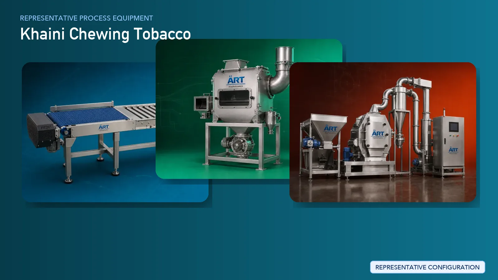

Khaini (Chewing Tobacco) Processing Plant & Machinery Solutions
Khaini, a widely consumed chewing tobacco product, is manufactured through precise blending of processed tobacco with slaked lime and flavoring agents. The production process requires controlled mixing, uniform texture, moisture management, and dust-free handling to ensure consistent product quality.

About Khaini Chewing Tobacco processing
ART Mechatronics provides complete turnkey solutions for khaini processing units, offering advanced systems for tobacco preparation, blending, flavoring, and high-speed pouch packaging. Our solutions are engineered for large-scale production, consistent quality, and efficient plant operation.
Complete Khaini Process Flow
Tobacco leaves or processed tobacco are received and transferred to the production system.
Ensures smooth and continuous flow of material.
Tobacco is cleaned to remove impurities such as dust, sand, and foreign particles.
Improves product purity and protects downstream machinery.
Tobacco is conditioned to achieve optimal moisture levels for blending.
Ensures proper texture and prevents dryness.
Tobacco is processed into suitable size for mixing.
Ensures uniform particle size.
Slaked lime is prepared and processed to ensure fine and uniform consistency.
Critical for consistent product formulation.
Tobacco is blended with slaked lime and flavoring agents.
Ensures:
- Uniform mixing
- Consistent texture
- Balanced product formulation
Flavoring agents and additives are added to enhance taste and aroma.
Fine dust generated during mixing and handling is controlled. Systems Used:
Ensures:
- Clean working environment
- Product recovery
- Compliance with safety standards
Final product is packed into pouches using automated systems.
Suitable for high-speed commercial production.
Pouches are packed into cartons for distribution.
Machinery Required for Khaini Processing Plant
- Material Handling Systems
- Pre Cleaner
- Air Classifier
- Cyclone Separator
- Conditioning System
- Tobacco Cutting Machine
- Lime Processing System
- Ribbon Blender / Paddle Mixer
- Flavoring System
- Dust Collection System
- High-Speed Packaging Machines
- Cartoning Machines
Turnkey Khaini Plant Solutions
ART Mechatronics offers complete turnkey solutions for khaini manufacturing plants, including:
- Process design & plant layout
- Tobacco preparation and blending systems
- Lime processing integration
- Dust control & air handling systems
- High-speed packaging line integration
- Automation & control panels
- Installation & commissioning
- After-sales support
We customize solutions based on:
- Production capacity
- Product formulation
- Packaging speed requirements
- Plant layout
Why Choose Art Mechatronics
- Extensive experience in chewing tobacco processing systems
- Expertise in high-speed pouch packaging integration
- Advanced dust control and safety solutions
- Precision mixing and blending systems
- Heavy-duty industrial machinery design
- Global export capability
Machinery in a Khaini Chewing Tobacco plant
Where it's used
Get pricing & specs for the Khaini Chewing Tobacco plant
Share the product, target capacity, current process and plant location. These details help our engineers discuss the right machine or line configuration.
One partner, from design to start-up
ART Mechatronics designs, manufactures, installs and commissions your Khaini Chewing Tobacco solution with regional presence in India, UAE and Thailand.